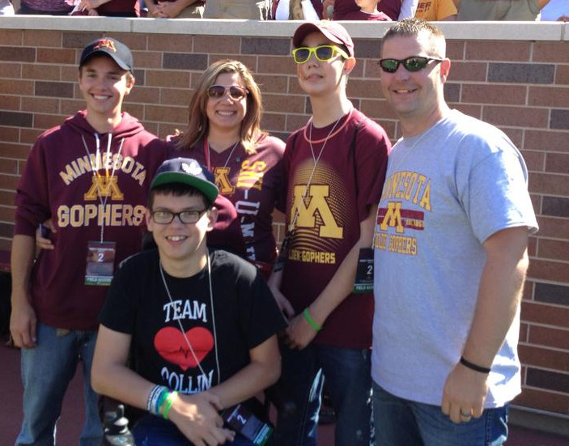
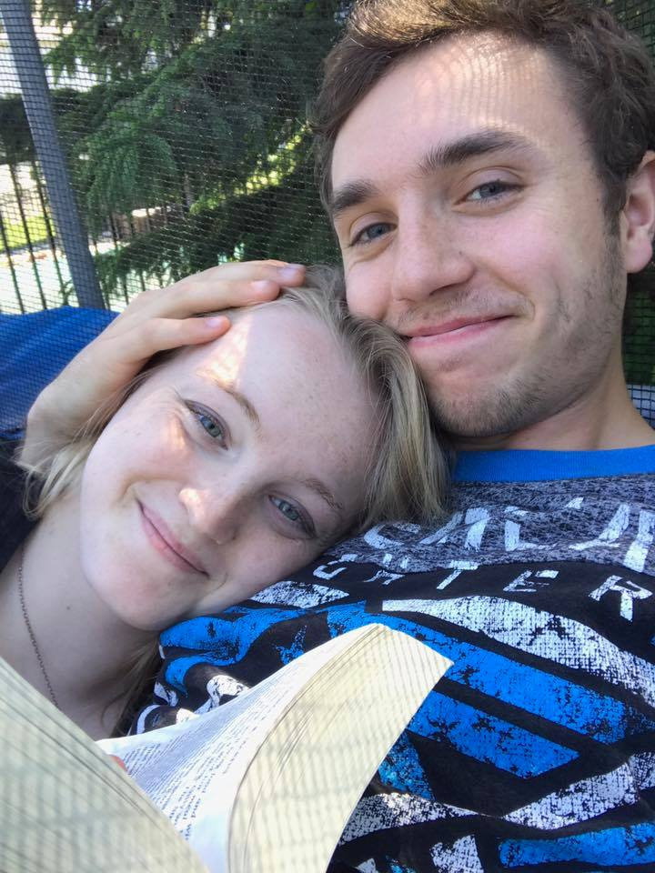

I was raised on a small farm in Rosemount Minnesota. I grew up as the oldest with 6 younger siblings, currently ranging in age from 6 to 20. My uncle introduced me to coding
when I was a sophomore in High School, and suggested I take a course to see how I liked it. That suggestion led me to take an intro to Java and an advanced data structures class all before
heading off to college and encouraged me to explore a field I had virtually no interest in beforehand.
My fondest memories while back in Rosemount almost all pertain to while we
were at our cabin in northern Minnesota. Water skiing and tubing and fishing filled weekends were always a highlight of my summer and spring breaks. These trips always meant a nice chance
for me to read on the end of the dock and just listen to the waves for a perfectly relaxing afternoon in the sun.
 Leaving High School and moving away to college meant leaving a lot of my old friends behind.
Luckily for me I found some new ones pretty quckly here at Eau Claire. One of which turned out to be my future wife, even. I am currently engaged to Paige (pictured left) and we are planning
on being married in this coming October!
In our spare time we like to be either longboarding around downtown Eau Claire and chatting in the local coffee shops or hammocking by the
river and reading, or, best of all, on particularly hot days, grabbing our tubes and relaxing while listening to music as we float down the Chippewa river.
When the colder weather
hits our favorite way to pass the time is generally by ice skating (even though I am absolutely horrible at it). Beyond the ice rink we enjoy wasndering around Irvine Park and
soaking in all of the Chrismtas lights and decorations that they put up for the season, all while sipping hot cocoa from a thermos.